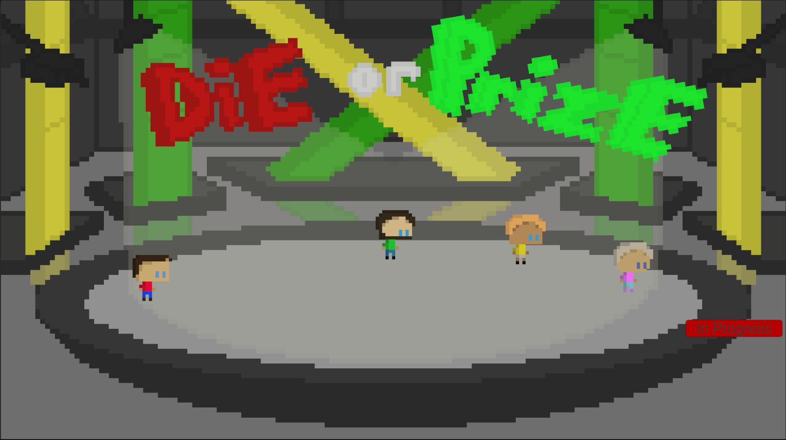
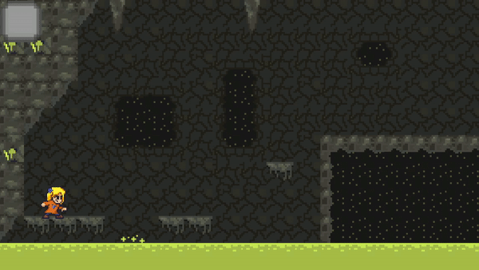

Die or Prize
This is my first fully solo developed game available on my Itch.io page!
I was responsible for all scripts, art work, game design decisions.
It took about two months to complete while also working on school work.

Bohemian Retreat
I was a lead programmer on this game jam project and was responsible for creating many of the games essential elements.
The games day cycle, player point and click movement, level design are some of the elements I contributed to.

Marvin's Revenge
I was one of two lead programmers on this college game design project.
I created most of the player functionality such as handling doors, picking up items, the "STEP" system, audio manager, game manager, and almost all textures and models were hand drawn and created by me.

Unreleased Personal Project
This is a personal project I have been working on.
I have been responsible for everything in the game from the audio, all scripts, art (except player sprites).
Mega Champ
I was the lead programmer on this college game design project.
I created the player movement system, level transition system, enemies, game manager, UI system, and audio system.

Little Detective
I was one of two lead programmers for this college game jam project.
I was responsible for creating the item pick up system, item collection system, UI system, and the games level design.